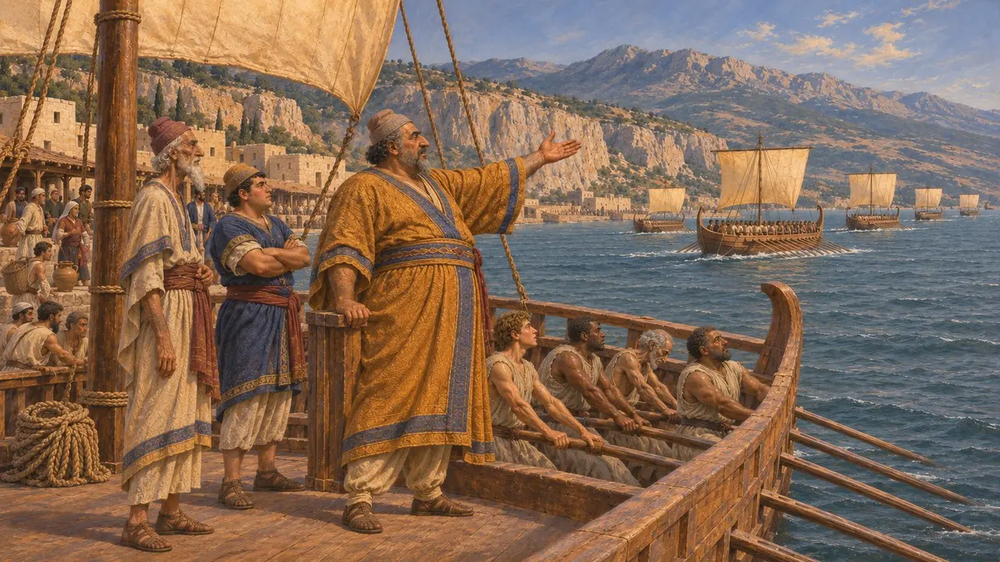
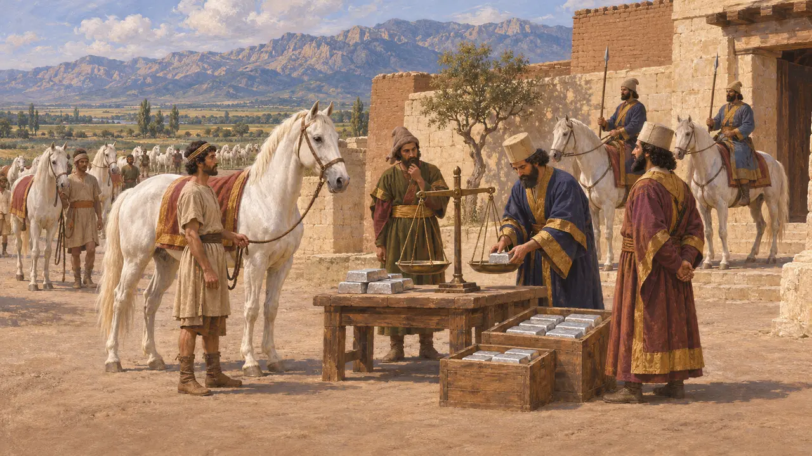
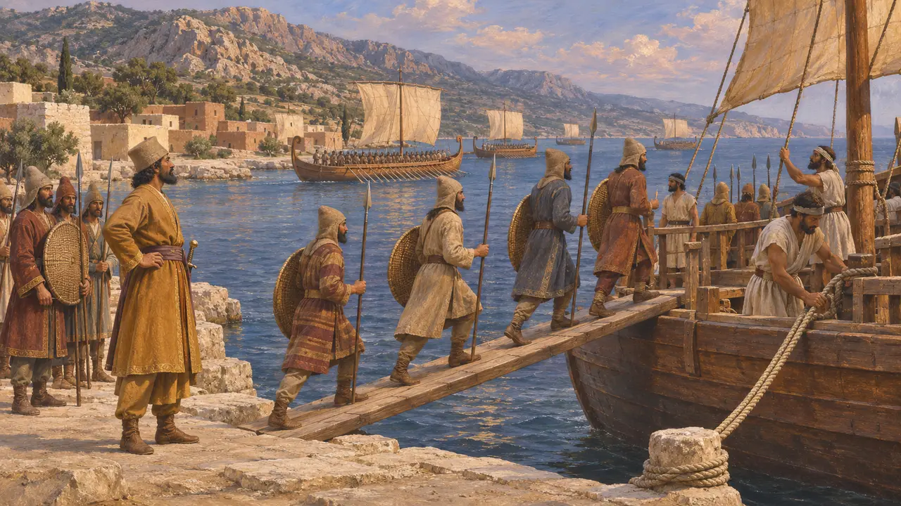
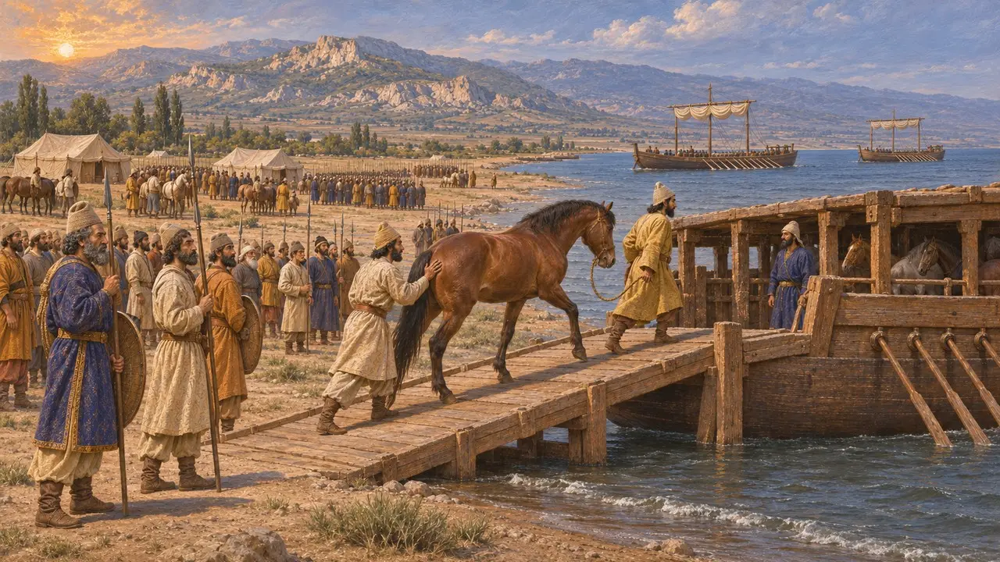
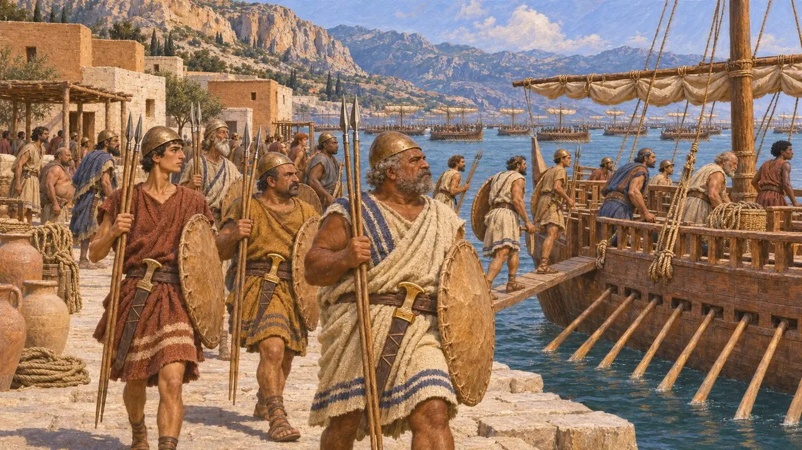

Cilicia
The south-eastern corner of Anatolia, under its own kings, the army's crossing point to Cyprus
Cilicia was the coastal plain and mountains of south-eastern Anatolia, facing Cyprus across a narrow sea. Its own kings, each called Syennesis by the Greeks, ruled it under the Persian King. Its harbours and plain were where the King's armies gathered to sail west, against Cyprus in 497 and against Eretria and Athens in 490.
Im Spiel: The Sardis Burns level tells of the army crossing from Cilicia to win back Cyprus, and the Athos and Marathon chatter of the fleets that sailed from it. The Cilicians have their flag among the nations.

Kings called Syennesis
Antiker BerichtHerodotus names a Syennesis of Cilicia who helped make peace between the Lydians and Medes after the eclipse battle, and another, son of Oromedon, who commanded the Cilician ships in 480. The name seems to have been a title the Greeks took for a personal name.
Herodotus 1.74, 7.98

Horses and silver
Antiker BerichtHerodotus says Cilicia paid 360 white horses, one for each day, and 500 talents of silver a year. Of that silver, 140 talents went to the horsemen who guarded the country, and the rest to the King.
Herodotus 3.90

The crossing to Cyprus
Antiker BerichtWhen the Cypriot towns joined the Ionian revolt in 497, Herodotus says, the Persian general Artybius brought an army by sea to Cilicia and crossed from there to Cyprus. The Phoenician fleet sailed round to Cyprus with it, and within a year the island was the King's again.
Herodotus 5.108-116


A hundred ships for Xerxes
Antiker BerichtIn 480 the Cilicians sent 100 ships to Xerxes' fleet. Herodotus says their crews wore their native helmets and carried shields of rawhide, with woollen tunics, two javelins each and swords like Egyptian ones.
Herodotus 7.91
Quellen
- Herodotus 1.74
- Herodotus 3.90
- Herodotus 5.108-116
- Herodotus 6.95
- Herodotus 7.91
- Herodotus 7.98